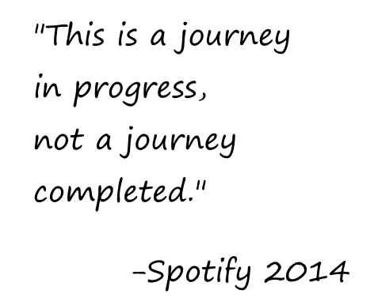

Spotify released two videos in 2014 that described thier agile engineering culture.
Thier videos talks about how they implemented agile while thier development team started to scale up and how they are maintaining agile in large scale. Spotify has found what is really important with Agile and they do a great job of describing it in these videos.
One of the most important things that I got from these videos is that agile development is not a destination, but a constant state of work and progress. With regular retrospectives and team members who feel empowered to contribute to the process, Spotify has identified what is important about agile.
I really can't do it justice, so just take some time and watch both videos. Also follow this link to read thier article that goes with the videos.
Part 1
Part 2